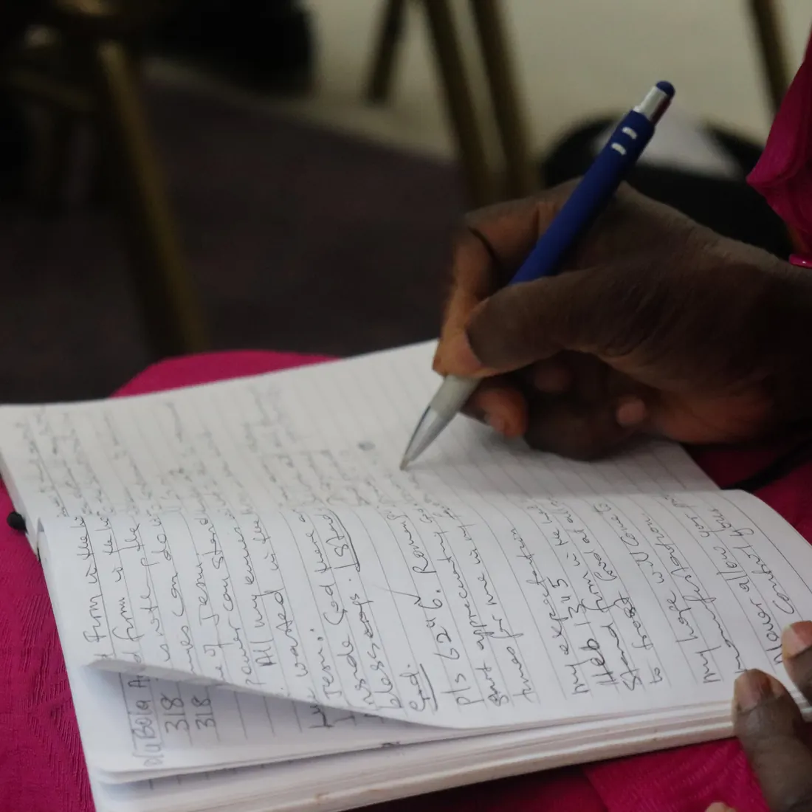

Purpose
Discovering and pursuing God’s design for this season of life.

A divine movement preparing singles for marriage — equipping believers through the Word of God, prayer and holy living.
Gen218 Regional Coordinator · MFM Austin, Texas
“And the Lord God said, It is not good that the man should be alone; I will make him an help meet for him.” — Genesis 2:18
Gen218 equips Christian singles on every plane — spiritually, emotionally and practically — to walk in purpose, purity and preparation for God’s best.
Every gathering is shaped to root singles in the Word, deepen their walk with God and prepare them for God’s best.
Discovering and pursuing God’s design for this season of life.
A life of holiness, self-control and honour before God.
Spiritual maturity and readiness for God’s best in marriage and ministry.
 Gen218
Gen218MFM Prayer City — 10000 Kleckley Dr, Houston, TX 77075